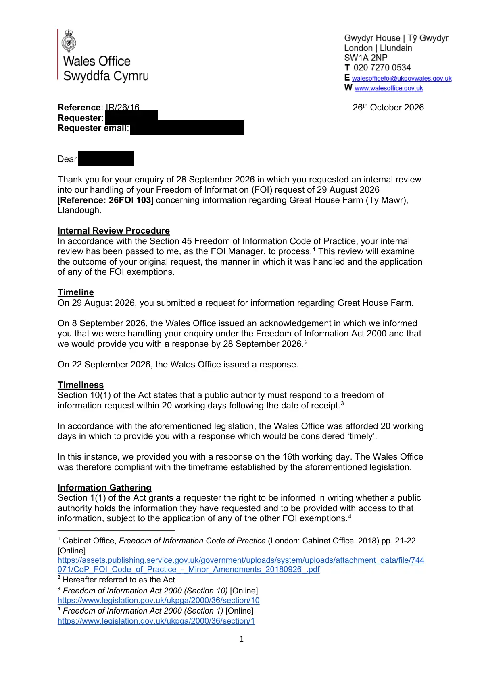

GHF-E106-R58-A1 not held
Wales Office internal review IR/26/16: "not held" upheld

Transcript
1 Reference: IR/26/16 26th October 2026 Requester: Requester email: [email redacted] Dear Requester , Thank you for your enquiry of 28 September 2026 in which you requested an internal review into our handling of your Freedom of Information (FOI) request of 29 August 2026 [Reference: 26FOI 103] concerning information regarding Great House Farm (Ty Mawr), Llandough. Internal Review Procedure In accordance with the Section 45 Freedom of Information Code of Practice, your internal review has been passed to me, as the FOI Manager, to process.1 This review will examine the outcome of your original request, the manner in which it was handled and the application of any of the FOI exemptions. Timeline On 29 August 2026, you submitted a request for information regarding Great House Farm. On 8 September 2026, the Wales Office issued an acknowledgement in which we informed you that we were handling your enquiry under the Freedom of Information Act 2000 and that we would provide you with a response by 28 September 2026.2 On 22 September 2026, the Wales Office issued a response. Timeliness
Read more
Section 10(1) of the Act states that a public authority must respond to a freedom of information request within 20 working days following the date of receipt.3 In accordance with the aforementioned legislation, the Wales Office was afforded 20 working days in which to provide you with a response which would be considered ‘timely’. In this instance, we provided you with a response on the 16th working day. The Wales Office was therefore compliant with the timeframe established by the aforementioned legislation. Information Gathering Section 1(1) of the Act grants a requester the right to be informed in writing whether a public authority holds the information they have requested and to be provided with access to that information, subject to the application of any of the other FOI exemptions.4 1 Cabinet Office, Freedom of Information Code of Practice (London: Cabinet Office, 2018) pp. 21-22. [Online] https://assets.publishing.service.gov.uk/government/uploads/system/uploads/attachment_data/file/744 071/CoP_FOI_Code_of_Practice_-_Minor_Amendments_20180926_.pdf 2 Hereafter referred to as the Act 3 Freedom of Information Act 2000 (Section 10) [Online] https://www.legislation.gov.uk/ukpga/2000/36/section/10 4 Freedom of Information Act 2000 (Section 1) [Online] https://www.legislation.gov.uk/ukpga/2000/36/section/1 2 In this instance you requested the following information. Please note, due to the length of your original request, the key points for recorded information have been summarised below: ● Records of any communication or outreach between Cadw, or its predecessor functions, and the Office of the Secretary of State for Wales / Welsh Office concerning Great House Farm during the period July–December 1988. ● Records of any recommendation, briefing, submission, notification or formal appeal concerning the protection or listing of Great House Farm submitted to the Secretary of State. ● Records of any communications with the occupiers and owners of the property before the refusal decision of 5 December 1988. ● Any surviving destruction, disposal, transfer or accession documentation relating to the Great House Farm 1988 assessment file, including certificates, dockets, lists, database entries, retention schedules, disposal authorities or other contemporaneous records held by the Welsh Office, its predecessors, Cadw, or any repository to which relevant records were transferred. ● Information regarding a decision made in relation to Great House Farm in 1988, including the evidence that was used to support that decision. Having consulted with the team who handled your request, I am content that this case was properly allocated to the team who were most likely to hold relevant information. Application of the Exemptions In our original response to 26FOI 103, it was determined that the Wales Office did not hold any recorded information relevant to your request, and therefore exemptions were not engaged. Our original response included: We have carried out a search of our digital records and have determined that the Wales Office does not hold the information requested. Any paper files previously held by the former Welsh Office relating to this matter would have been transferred to the National Assembly for Wales in 1999, and subsequently to the Welsh Government in 2007. You may therefore wish to request this information from the Welsh Government. Freedom of information requests can be made to the Welsh Government through this email address: [email redacted]. Comments & Queries In this section of the response, I will address any comments or queries you made when you submitted your request for an internal review. You submitted the following: I request an internal review of the handling and substance of 26FOI 103. This is an FOI review only. I am not asking the Wales Office to determine title, to reopen BP Properties Ltd v Buckler, or to adopt any party's case on the land. I am asking whether the letter of 22 September 2026 answered the request that was made, and whether the search described in it was adequate. A. What is already on this file 1. 29 August 2026 — I asked the Wales Office for recorded information about Great House Farm. Your letter of 22 September quotes the request as five points. I adopt that quotation. The points were: 3 - records of any communication or outreach between Cadw, or its predecessor functions, and the Office of the Secretary of State for Wales / Welsh Office concerning Great House Farm during July–December 1988; - records of any recommendation, briefing, submission, notification or formal appeal concerning the protection or listing of Great House Farm submitted to the Secretary of State; - records of any communications with the occupiers and owners of the property before the refusal decision of 5 December 1988; - any surviving destruction, disposal, transfer or accession documentation relating to the Great House Farm 1988 assessment file, including certificates, dockets, lists, database entries, retention schedules, disposal authorities or other contemporaneous records held by the Welsh Office, its predecessors, Cadw, or any repository to which relevant records were transferred; - information regarding a decision made in relation to Great House Farm in 1988, including the evidence that was used to support that decision. 2. 8 September 2026 — acknowledgement from NIO FOI ([email redacted]), recording the request date as 29/08/26. It named no officer and described no search. 3. 22 September 2026 — covering email from the same NIO FOI mailbox, attaching “26FOI 103 - Requester - Response.pdf”. The covering email contained no substance. The letter is signed Freedom of Information Team, Wales Office, and directs any review to [email redacted]. This review is within the two calendar months stated in that letter. The deadline you gave is 22 November 2026. B. What the letter actually states, and what it does not The operative paragraph is this: “We have carried out a search of our digital records and have determined that the Wales Office does not hold the information requested. Any paper files previously held by the former Welsh Office relating to this matter would have been transferred to the National Assembly for Wales in 1999, and subsequently to the Welsh Government in 2007.” That paragraph does not answer the request. The gaps are these. 1. Digital records only. The letter states a search of digital records. It does not say that paper, microfilm, card indexes, transfer lists, accession registers, or destruction schedules were searched. A 1988 Welsh Office file is a paper file. A search confined to current digital holdings cannot find it, and cannot find the transfer or destruction docket that the fourth bullet asked for. 2. “Would have been transferred” is not a search result. It is an assumption about devolution. It is not a statement that a transfer list was consulted, that a file for this house appears on that list, or that the file was received in Cardiff. “Would have been” covers three different outcomes: transferred, destroyed, or still here under another description. The letter does not distinguish them. 3. The fourth bullet asked for the transfer, disposal and accession records themselves. Those records, if they exist, are Wales Office records of what left the building. They are not the assessment file. Pointing me to the Welsh Government does not answer a request for the docket, the list, the database entry or the disposal authority. Those may still be held here even if the file went to Cardiff. The letter does not say they were searched for. 4 4. The five bullets are not answered one by one. There is no finding on communications with Cadw; no finding on any briefing or appeal to the Secretary of State; no finding on communications with occupiers and owners before 5 December 1988; no finding on the evidence said to have supported a 1988 decision. A single sentence that digital records do not hold “the information requested” does not show that each limb was searched. 5. The letter uses “the refusal decision of 5 December 1988” only because I used it. It does not say whether that decision is recognised, whether a file for it was identified, or whether the decision is one of the papers “which would have been transferred”. Silence on a dated decision is not a not-held finding. 6. “You may therefore wish” is not section 16 advice. Section 16 requires advice and assistance so far as reasonable. A reasonable step, where the department asserts a transfer, is to give the receiving body's file reference, the date of transfer, and the series. None is given. If the intention was section 21 (information reasonably accessible elsewhere), that exemption is not named, and the conditions are not addressed. A suggestion that I write to [email redacted] is not a section 21 notice. 7. “Does not hold” is stated as a conclusion. The search described cannot support it. A not- held finding under section 1 requires a search capable of finding the information. A search of digital records, plus an assumption about 1999, is not that search. 8. The request was answered from a Northern Ireland Office mailbox. The letter is in the name of the Wales Office. The review must be of the Wales Office search. Please confirm it will not be taken by the person who signed the 22 September letter. C. What the reviewing officer is asked to determine 1. What was searched, by name: digital systems, paper series, transfer lists, accession registers, destruction schedules, Gwydyr House holdings, and any index of files passed to the National Assembly in 1999 or to the Welsh Government in 2007. If a location was not searched, say so. 2. For each of the five bullets, a separate finding: held, not held after the searches at (1), transferred (with date, recipient and reference), or destroyed (with date and disposal authority). 3. Whether any transfer, disposal or accession record relating to a Great House Farm 1988 assessment file is held by this department, as distinct from the assessment file itself. 4. Whether any record of a decision on or about 5 December 1988, or of communications with the occupiers or owners before that date, was identified even as an index entry. 5. If information is held and is not to be disclosed, a section 17 notice naming the exemption. Do not replace that notice with a referral. 6. If the review maintains that the file went to Cardiff, the transfer reference. Without it, the referral is an assertion. D. Scope, so the review is not narrowed again The window is July–December 1988. Possession of Great House Farm / Tŷ Mawr, Llandough, adjoining St Dochdwy's, was taken on 29 November 1988. Demolition of the 5 farmhouse began on 6 December 1988. The refusal date in the request is 5 December 1988. Those dates fix the search. They do not ask you to decide the land. I have made a parallel request to the Welsh Government, following the referral. That does not discharge 26FOI 103. A file can have been transferred and the transfer docket can still be here. Both questions were asked. Only one was gestured at. E. Why these records are in scope, without asking you to decide title The public index is https://greathousefarmwiki.wordpress.com/ The investigation distinguishes Parcel A (farmhouse, garden, buildings and yard — the family's maintained freehold interest out of the Bute estate) from Parcel B (eastern fields). Later papers use “whole farm”. BP Properties Ltd v Buckler [1987] EWCA Civ 2 decided possession, limitation and the October 1974 letters. It did not decide the documentary root of Parcel A. Whether the Secretary of State or Cadw looked at this house in the week it was refused and pulled down is a records question. It is not a request that you adopt the family's case. F. Preservation Please preserve any record that may fall within 26FOI 103 while this review is open, including transfer lists, destruction schedules and anything due for routine disposal. Do not transfer or destroy in-scope material without a written receipt that can be disclosed on the review. G. Reservation This letter does not waive any position on title, registration, concealment, limitation, or any later reopening. It is an internal review under the Freedom of Information Act 2000. It is not a claim form and is not service of proceedings. On 21 October 2026 you submitted further points: One development since my review request is relevant to it. The response to 26FOI 103 (22 September 2026) said the historic Welsh Office / Cadw listing papers for Great House Farm (Tŷ Mawr), Llandough sit with the Welsh Government. I made that request to the Welsh Government on 28 September 2026 (ATISN 27589). On 19 October 2026 it was refused under section 14(2) FOIA as substantially similar to an earlier request, and no new papers were identified. So that the review gives usable advice under section 16 FOIA, please: 1. identify, if the Department holds the information, which files, series or registry references the 22 September response was referring to, and any transfer to the Welsh Government, The National Archives or elsewhere, with the date and reference; 2. confirm the systems and file indexes searched for 26FOI 103; 3. confirm that any records within scope are preserved while the review and any complaint to the Information Commissioner remain open. Please see comments to your points below: All acknowledgement emails for the Wales Office are sent from the Northern Ireland Office mailbox, as we adopt a shared service. Acknowledgement emails are purely to advise requesters that their request is being processed, they do not contain details regarding case handling or search procedures, nor do they disclose the identity of individual case officers. 6 Our full response to your request was provided in the attached document referenced in the covering email dated 22 September 2026. This email was sent from the Northern Ireland Office FOI mailbox due to our shared service model, and the response directed all subsequent correspondence to the Wales Office FOI inbox. I can confirm that a different individual has been involved with undertaking this internal review. Please see answers to part C of your request for an internal review, where you asked the reviewing officer to determine: C1. Reasonable searches were conducted across the Wales Office’s digital database to identify records within scope of your request. Since the Wales Office holds no physical records which pre-date devolution in 1999 (explained further below), searches focused on digital records. Searches were conducted across areas where the requested information was most likely to be held. The key search terms included ‘Great House Farm, House of Williams/Requester, Llandough’. No relevant recorded information was identified. Therefore, in accordance with section 1(1)(a) of the Freedom of Information Act 2000, you were informed that the Wales Office did not hold the requested information. C2. No recorded information was identified for each of the five points of your request. C3. As outlined, no recorded information was located on the requested topic, therefore we do not hold any information relating to a transfer, disposal or accession record. When the National Assembly for Wales was established in 1999, all documents, records, and files held by the Welsh Office at that time were transferred to the newly formed National Assembly. Given that your request pertains to historic Welsh Office records related to a devolved function, any surviving documents would have been transferred to the National Assembly. The transfer was formalised through the National Assembly for Wales (Transfer of Records) Order 2004 where all relevant records held in connection with a transferred function moved from the Secretary of State for Wales to the Assembly. C4. No recorded information was identified, as outlined above. C5. No recorded information was identified, as outlined above. C6. No recorded information was identified, as outlined above. Therefore, we are unable to provide you with a transfer reference. All records related to this internal review and 26FOI 103 will be retained in accordance with departmental retention schedules. The further points that were submitted on 21 October 2026 have been reviewed, and I can confirm that they have all been addressed above. Conclusion Having reconsidered the original response, I am content that the Wales Office responded correctly. I am therefore upholding our original decision. In regards to handling I am content that you have been kept regularly informed as to the progress of your request and that you were provided with a response which would be 7 considered timely. The internal review into this case has now been completed. If you are dissatisfied with this response, you have the right to escalate your case to the Information Commissioner’s Office (ICO). Please find their contact details below: Information Commissioner's Office Wycliffe House [address redacted] Wilmslow Cheshire [address redacted] Web form: https://ico.org.uk/make-a-complaint/foi-and-eir-complaints/ Yours sincerely, FOI Manager Freedom of Information Team Knowledge and Information Management The Wales Office
Artifact description
Internal review IR/26/16 of 26FOI 103 completed: the original "not held" answer is upheld. Searches were digital only, with the terms "Great House Farm, House of Williams/Requester, Llandough"; pre-1999 Welsh Office paper files went to the National Assembly for Wales (Transfer of Records Order 2004) and later the Welsh Government. Next step offered: ICO complaint.
| Catalogue ID | GHF-E106-R58-A1 |
|---|---|
| What it is | PDF document from Wales Office (NIO FOI unit). Attached to an email received on 26 October 2026, their reference IR/26/16. 7 pages. |
| From | Wales Office (NIO FOI unit) |
| Email received | 26 October 2026 |
| Their reference | IR/26/16 |
| Pages | 7 |
| File | IR 26 16 - Requester - Response.pdf (258 KB) |
| State | Read |
Our integration
The review upholds "not held" and confirms the search was of digital records only. A Welsh Office file from 1988 would have been paper, so a digital-only search could not have found it, or any record of its transfer or destruction. The search terms quoted do not include "Tŷ Mawr" or "Ty Mawr", the name the 1988 listing papers use.
Concern to test: the letter states pre-1999 paper files "would have been" transferred to the National Assembly (1999) and then the Welsh Government (2007). That is how devolution transfers normally ran, not the result of checking a transfer list. The Welsh Government's own answers (ATISN 27021, ATISN 26-0010) are where that trail continues; see GHF-E106-R56-A1 and GHF-E106-R59-A1.
What cuts against the case: the reply was on time, the review was done within 20 working days, and a department that inherited no Welsh Office paper may genuinely hold nothing. An empty search here is not, by itself, a sign that anything was withheld.
Next dated step: an ICO complaint is open to the Requester; nothing is due from the Wales Office.
Related: The covering email · What They Don’t Say: WTDS-c68bb0f8-1 · Timeline · Disclosure Dartboard